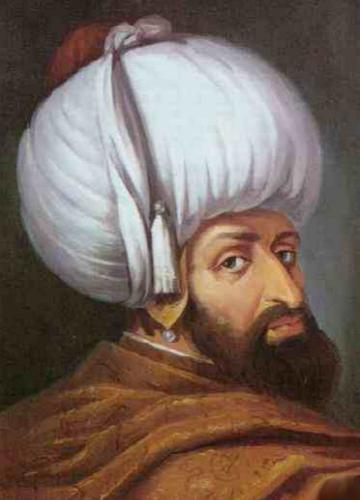

|
 |
ÇELEBİ MEHMET Mehmed Çelebi beşinci Osmanlı padişahıdır. Babası Yıldırım Bayezid, annesi Germiyanoğullarından Devlet Hatun'dur. Doğum tarihini 1379, 1382, 1386, 1389, 1390, 1391 gösteren kaynaklar da bulunmaktadır; ama tarihçiler doğumu için kesin kaynakla tarih bulunmadığını kabul ederler. [1]Arap ve Bizans tarihlerinde Kirişci veya Kirî olarak lakap verilmiştir. Bunların çeşitli kaynaklarda değişik açıklamaları bulunur. Yay yapma özellikle yayın tutturulduğu ve çekildiği sert ipten kiriş yapma sanatini öğrenmiş olması, gençliğinde güreşcilik yapması, gençliğinde kendinin öldürülmesinden korkup bir kirisçinin yanında çıraklık yapması, gençliğinde yay kirişi ile boğulmak istenmesi şeklinde açıklamalar yapılmıştır. |